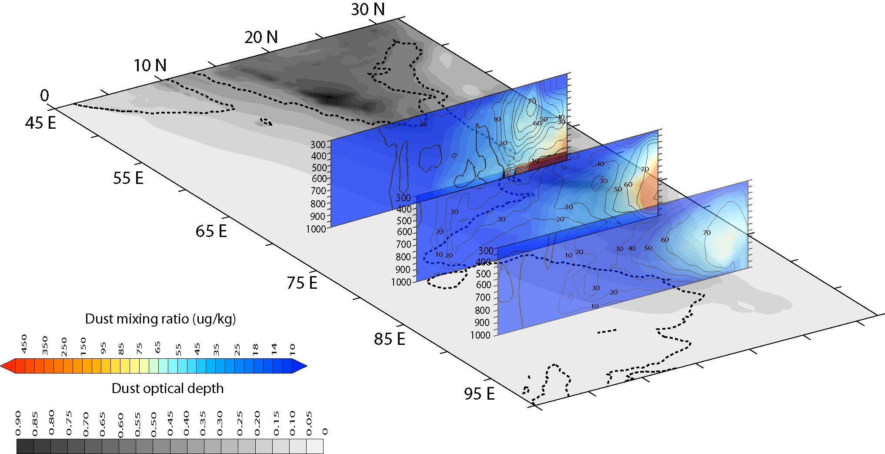
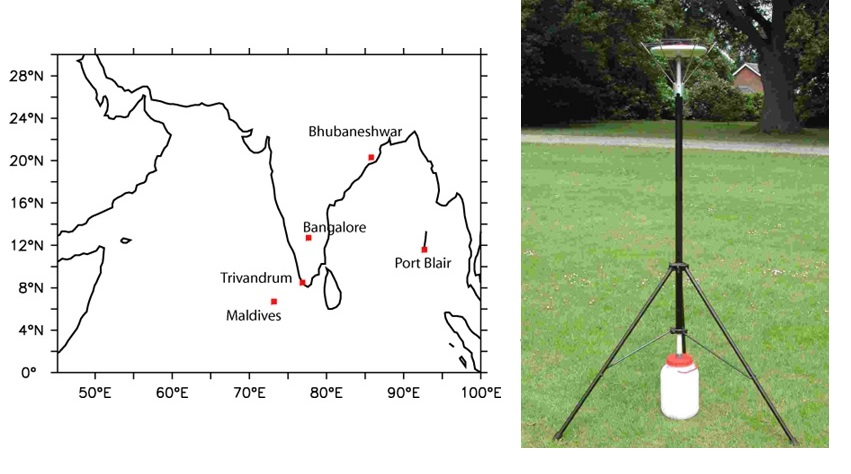
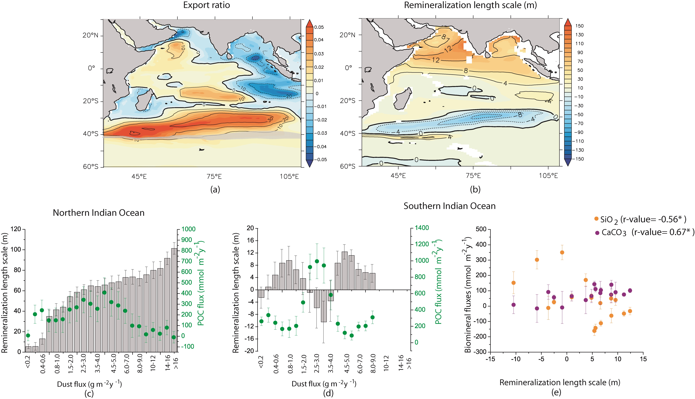
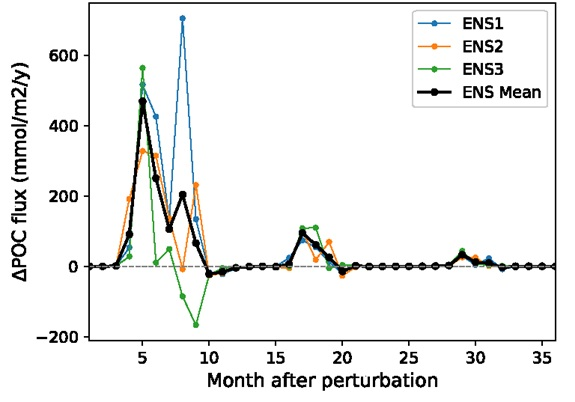

Dust Aerosol Variability over the Middle East & South Asia
Mineral dust is one of the most abundant aerosol types in the atmosphere and plays a critical role in the Earth's radiation budget, cloud formation, and nutrient delivery to the ocean. My work investigates the seasonal cycle, interannual variability, and long-term trends of dust aerosol over the Middle East and South Asia using satellite remote sensing, regional climate model (RegCM),as well as an Earth system model (CESM)
I have studied meteorological conditions favoring dust emissions over the Middle East and South Asia, dust transport pathways, and how large-scale patterns of ocean warming can modulate dust emission and transport.

RegCM simulations of dust transport across South Asia during summer monsoon. The black contours indicate percentage contribution of dust from South Asian sources to the total dust concentration.
Dust Measurements for Ocean Biogeochemistry
Leaching of metals following aerosol deposition on surface seawater is an important source of nutrients for the ocean ecosystem. Although South Asia and the surrounding northern Indian Ocean have globally some of the highest loadings of natural and anthropogenic aerosols, there is limited understanding of aerosol trace metal composition and their impacts on ocean biogeochemistry. To address this gap, I have set up continuous aerosol sampling stations in coastal and island locations in India and the Maldives, in collaboration with several research institutions. The aim is to measure total trace metal concentrations and their fractional solubility to investigate their bioavailability for ocean primary producers. Additionally, from isotopic compositions of trace metals, the relative importance of anthropogenic and natural sources of aerosols can be ascertained.
Following conclusion of the field stage, chemistry analyses are being carried out in collaboration with Imperial College London.

Aerosol time-series locations and a dust gauge used for dust deposition measurements.
Ocean Iron and Carbon Cycle
Dissolved iron (DFe) is an essential micronutrient that directly controls primary productivity in approximately 30% of global ocean and nitrogen fixation over the tropical oceans, thereby regulating the ocean carbon cycle. Primary sources of DFe to global oceans are atmospheric deposition, continental shelf sediments, river input, hydrothermal vents, sea-ice and glacier meltwater. The overlapping of multiple external sources, very low concentrations over large stretches of the ocean, coupled with myriad processes involved in internal cycling of DFe makes it difficult to disentangle the controls of DFe distribution. A tight coupling between the past atmospheric CO₂ levels, aeolian Fe flux and ocean productivity has been observed over the Southern Ocean, with sedimentary records and modeling studies pointing to enhanced Fe supply being responsible for around 10-40 ppmv reduction in atmospheric CO₂ concentrations during the Last Glacial Maximum.
During Ph.D., I examined how episodic dust depositions can alleviate iron limitations over the northwestern Indian Ocean (IO), where the ferricline lies deeper than the nitracline during the winter mixed layer deepening period. More recently, I conducted simulations with an Earth system model (CESM2), which highlight the dominance of atmospheric depositions in supplying DFe and supporting phytoplankton growth over the IO. In contrast, the importance of sedimentary sources of Fe changes seasonally due to monsoon-driven variation in upper ocean circulation. These simulations also reveal a shift in phytoplankton functional types following atmospheric Fe fertilization with implications for dominant biomineral fluxes, as well as surface-to-deep ocean gradients in dissolved inorganic carbon and alkalinity. The results show that the remineralization length scale of particulate organic carbon (POC) is controlled by ballasting effects of mineral dust over the high-dust northern IO, whereas it is a function of ecosystem structure over the low-dust southern IO.
Another work area is exploring future changes in air-sea CO₂ fluxes over various regions of the global oceans using results from multiple Earth system models from the Coupled Model Intercomparison Project Phase 6.

Shadings show the response of (a) export ratio and (b) remineralization length scale (λ) to atmospheric sources of dissolved iron (DFe) from CESM2 simulations, contours indicate the percentage contribution of atmospheric DFe to these variables. The grey shaded region in (a) shows the location of the Subtropical front. The variation of λ and particulate organic carbon flux (green circles) at 100 m as a function of the magnitude of dust deposition is shown for (c) the northern Indian Ocean (IO) and (d) the southern IO. The scatter plot in (e) shows the relation between λ and the fluxes of biominerals at 100 m depth for the southern IO. The vertical error bars show 1 standard deviation of these variables. The numbers within the parenthesis indicate the correlation coefficient between λ and the corresponding biominerals and the asterisks denote significant (p-value <0.05) correlation.
Marine Carbon Dioxide Removal
The goal of the Paris Agreement in 2015 to limit average global temperature increase to well within 2 degree C above the pre-industrial level requires reducing global greenhouse gas emissions combined with actively deploying various greenhouse gas removal strategies. The ocean has capacity to store 50 times more CO₂ than the atmosphere and 15-20 times more CO₂ than land, and thus marine-based CO₂ removal (mCDR) strategies are critical to the transition to net-zero. However, large gaps exist in our current understanding of the pathways and magnitude of carbon transport from the surface to deep ocean.
Building on the insights obtained from dust deposition and iron cycle studies, I am carrying out CESM2 simulations to examine the intended and unintended consequences of spraying fine dust with iron as an mCDR strategy. The work assesses the impacts of nutrient release and ballasting effects of dust addition across various ocean regions under the present climate. A key focus is improvement in model representation of processes controlling organic carbon flux in the ocean by including bacteria interaction with organic matter.

Response of particulate organic carbon (POC) flux at 120 m following fine dust spraying over the North Atlantic during April-June.